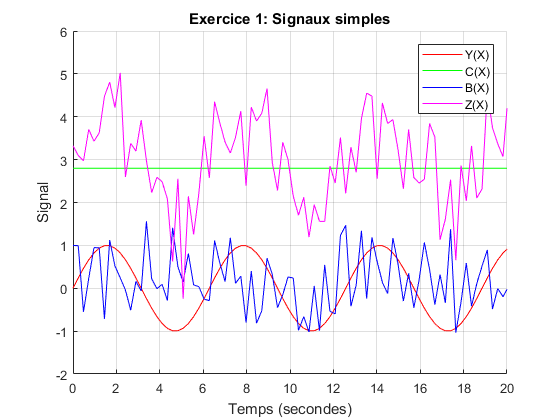
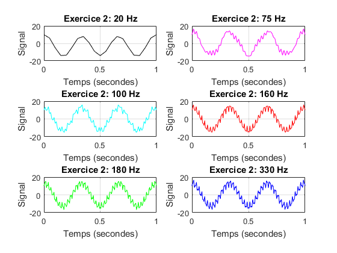
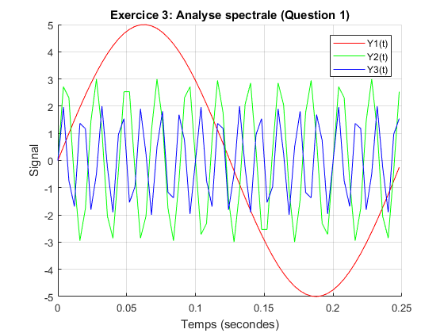
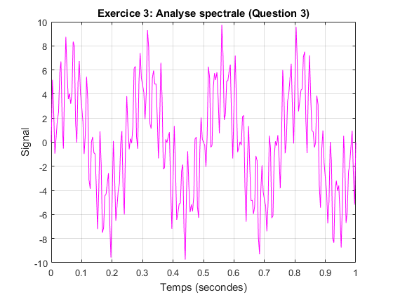
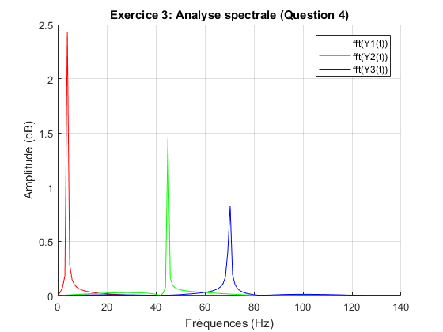
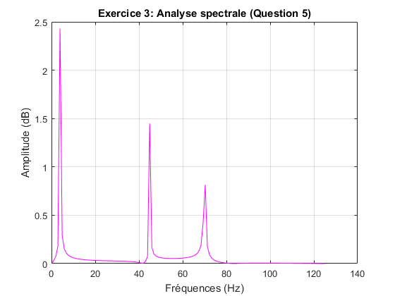
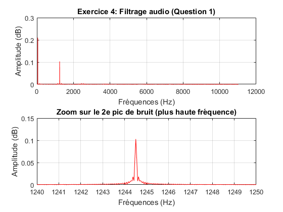
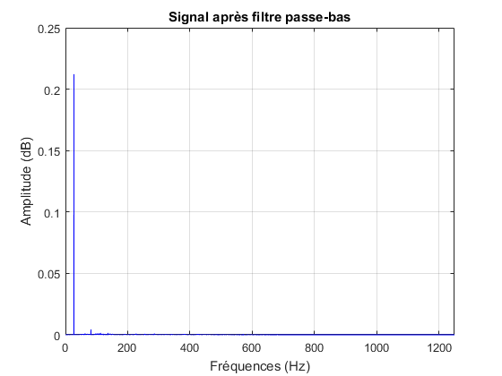
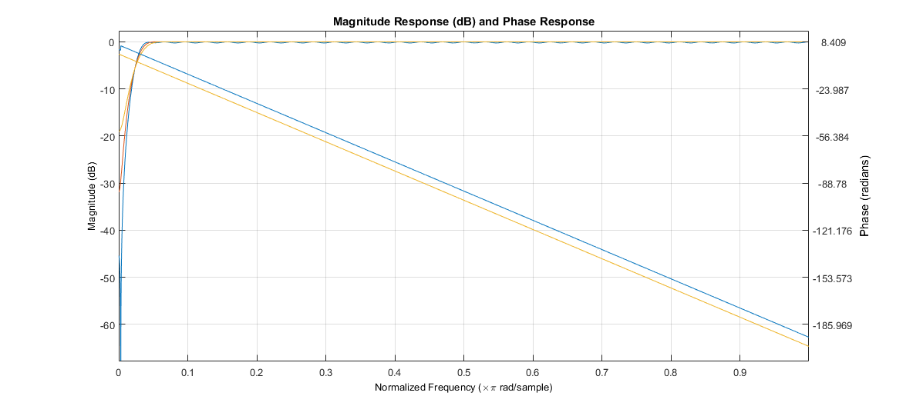
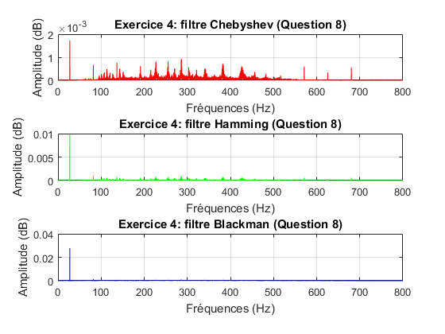

Contents
Exercice 1 (2 points): Signaux simples
% Nettoyage du workspace clear all; close all; clc; % Définition des variables X = [0:pi/13:7*pi]; Y = @(x) sin(x); C = @(x) ones(size(x))*2.8; B = @(x) sqrt(0.4).*randn(size(x)) + 0.1; % Question 1. (1 point) Z = @(x) Y(x) + C(x) + B(x); % Réponses affichées à l'écran moyenne = mean(Z(X)) % moyenne = 3,0839 variance = var(Z(X)) % variance = 0,9057 % Question 2. (1 point) hold on; plot(X, Y(X), 'r'); plot(X, C(X), 'g'); plot(X, B(X), 'b'); plot(X, Z(X), 'm'); xlim([0 20]); % Peaufinage du graphique grid on; title("Exercice 1: Signaux simples"); xlabel("Temps (secondes)"); ylabel("Signal"); legend("Y(X)", "C(X)", "B(X)", "Z(X)");
moyenne =
3.0252
variance =
0.7090
 Exercice 2 (4 points): Échantillonnage
% Nettoyage du workspace clear all; close all; clc; % Signal analogique Y(t) Y = @(t) 2*sin(165*pi*t) + 13*cos(6*pi*t) - 3*cos(80*pi*t); % Question 1. (0.5 point) % Les 3 termes de l'équation représentent les signaux indépendants. % Les signaux ont des périodes (T) de 165*pi, 6*pi et 80*pi, respectivement. % Leur fréquence (f) est donc déterminée par la formule T = 2*pi*f. % Nous avons donc des fréquences de 82.5 Hz, 3 Hz et 40 Hz. % Question 2. (1.5 points) X_20hz = [0:(1/20):1]; X_75hz = [0:(1/75):1]; X_100hz = [0:(1/100):1]; X_160hz = [0:(1/160):1]; X_180hz = [0:(1/180):1]; X_330hz = [0:(1/330):1]; % Tableau 1/6: 20 Hz subplot(3,2,1); plot(X_20hz, Y(X_20hz), 'k'); xlabel("Temps (secondes)"); ylabel("Signal"); title("Exercice 2: 20 Hz"); ylim([-20 20]) grid on; % Tableau 2/6: 75 Hz subplot(3,2,2); plot(X_75hz, Y(X_75hz), 'm'); xlabel("Temps (secondes)"); ylabel("Signal"); title("Exercice 2: 75 Hz"); ylim([-20 20]) grid on; % Tableau 3/6: 100 Hz subplot(3,2,3); plot(X_100hz, Y(X_100hz), 'c'); xlabel("Temps (secondes)"); ylabel("Signal"); title("Exercice 2: 100 Hz"); ylim([-20 20]) grid on; % Tableau 4/6: 160 Hz subplot(3,2,4); plot(X_160hz, Y(X_160hz), 'r'); xlabel("Temps (secondes)"); ylabel("Signal"); title("Exercice 2: 160 Hz"); ylim([-20 20]) grid on; % Tableau 5/6: 180 Hz subplot(3,2,5); plot(X_180hz, Y(X_180hz), 'g'); xlabel("Temps (secondes)"); ylabel("Signal"); title("Exercice 2: 180 Hz"); ylim([-20 20]) grid on; % Tableau 6/6: 330 Hz subplot(3,2,6); plot(X_330hz, Y(X_330hz), 'b'); xlabel("Temps (secondes)"); ylabel("Signal"); title("Exercice 2: 330 Hz"); ylim([-20 20]) grid on; % Question 3. (1 point) % Nous remarquons que plus la fréquence d'échantillonnage est élevée, plus % la forme du signal est précise et se rapproche du signal analogique. % Question 4. (1 point) % Selon le théorème de Nyquist-Shannon, la fréquence d'échantillonnage % minimale acceptable est égale au double de la plus grande fréquence % présente dans le signal. % % Dans notre cas, puisque la plus grande fréquence est de 82.5 Hz, il faut % choisir une fréquence d'échantillonnage plus grande ou égale à 165 Hz. % % Les fréquences d'échantillonnage de l'exercice 2 qui satisfont le % théorème sont donc celui de 180 Hz et 330 Hz. La plus optimale est tout % de même celle de 330 Hz.
Exercice 3 (5 points): Analyse spectrale
% Nettoyage du workspace clear all; close all; clc; % Question 1. (1 point) Y1 = @(t) 5*sin(2*pi*4*t); Y2 = @(t) 3*sin(2*pi*45*t); Y3 = @(t) 2*sin(2*pi*70*t); T = [0:(1/250):0.25]; % Affichage des trois signaux figure(1); hold on; plot(T, Y1(T), 'r'); plot(T, Y2(T), 'g'); plot(T, Y3(T), 'b'); % Peaufinage du graphique grid on; title("Exercice 3: Analyse spectrale (Question 1)"); xlabel("Temps (secondes)"); ylabel("Signal"); legend("Y1(t)", "Y2(t)", "Y3(t)"); % Question 2. (0.5 point) % Périodes: % Y1(t): 1/(1/0,25) = 1/4 % Y2(t): 1/(11,25/0,25) = 1/45 % Y3(t): 1/(17,5/0,25) = 1/70 % Question 3. (0.5 point) Z = @(t) Y1(t) + Y2(t) + Y3(t); T_extended = [0:(1/250):1]; % Pour voir la tendance à plus grand échelle % Affichage de la somme des trois signaux figure(2); plot(T_extended, Z(T_extended), 'm'); grid on; title("Exercice 3: Analyse spectrale (Question 3)"); xlabel("Temps (secondes)"); ylabel("Signal"); % Période graphique: 1/(4/1) = 1/4 % Période analytique: 1/4 % Question 4. (2 points) % En suivant l'exemple ici: % https://www.mathworks.com/help/matlab/ref/fft.html?requestedDomain=www.mathworks.com Fe = 250; % Fréquence d'échantillonage t = [-0.5:1/Fe:0.5]; % Vecteur temps L = length(t); % Longueur du signal n = 2^nextpow2(L); % "This will pad the signal X with trailing zeros in order to improve the performance of fft." f = Fe*(0:(n/2))/n; % "Define the frequency domain." % TFD des trois signaux Y1_fft = fft(Y1(t),n); P1 = abs(Y1_fft/n); Y2_fft = fft(Y2(t),n); P2 = abs(Y2_fft/n); Y3_fft = fft(Y3(t),n); P3 = abs(Y3_fft/n); % Affichage des trois TFD figure(3); hold on; plot(f,P1(1:n/2+1), 'r'); plot(f,P2(1:n/2+1), 'g'); plot(f,P3(1:n/2+1), 'b'); % Peaufinage du graphique grid on; title("Exercice 3: Analyse spectrale (Question 4)"); xlabel("Fréquences (Hz)"); ylabel("Amplitude (dB)"); legend("fft(Y1(t))", "fft(Y2(t))", "fft(Y3(t))"); % On remarque que les pics de chacune des fonction représente la fréquence % des signaux, soit 4, 45 et 70 % Question 5. (1 point) % TFD de la somme des trois signaux Z_fft = fft(Z(t),n); Pz = abs(Z_fft/n); % Affichage de la TDF de la somme des trois signaux figure(4); plot(f,Pz(1:n/2+1), 'm'); % Peaufinage du graphique grid on; title("Exercice 3: Analyse spectrale (Question 5)"); xlabel("Fréquences (Hz)"); ylabel("Amplitude (dB)"); % On remarque que le résultat est le même; La FFT d'un signal affiche les % fréquences présentes et affiche donc les fréquences additionnées de Z.   
Exercice 4 (9 points): Filtrage audio
% Nettoyage du workspace clear all; close all; clc; % Question 1. (1 point) [Data, Fe] = audioread('audio.wav'); son_original = audioplayer(Data, Fe); % Valeurs nécessaires au calcul de TFD L = numel(Data); % Longueur du signal n = 2^nextpow2(L); % "This will pad the signal X with trailing zeros in order to improve the performance of fft." f = Fe*(0:(n/2))/n; % "Define the frequency domain." % Question 2. (0,5 point) % TFD du signal original (Data) audio_fft = fft(Data,n); P = abs(audio_fft/n); % Affichage des TFD du signal original figure(1); subplot(2,1,1); plot(f,P(1:n/2+1), 'r'); grid on; title("Exercice 4: Filtrage audio (Question 1)"); xlabel("Fréquences (Hz)"); ylabel("Amplitude (dB)"); % Bonus: Zoom sur le pic à identifier avec la plus haute fréquence subplot(2,1,2); plot(f,P(1:n/2+1), 'r'); xlim([1240,1250]); % Les valeurs ont été déterminées par essai erreur avec le premier graphique de la figure 1. grid on; title("Zoom sur le 2e pic de bruit (plus haute fréquence)"); xlabel("Fréquences (Hz)"); ylabel("Amplitude (dB)"); % Question 3. (0.5 point) % La note de bruit de plus haute fréquence se situe entre 1244 et 1245, % selon le 3e graphique affiché au numéro 2. Le tableau de wikipedia % fourni dans l'énoncé situe la note ré# à la fréquence 1244.51 Hz! % Question 4. (1 point) % Source: https://www.mathworks.com/help/signal/ref/fir1.html b = fir1(128,(Fe/2)/1244.51/100); y = filter(b, 1, Data); % Création du son avec le filtre passe-bas. son_low_filter = audioplayer(y, Fe); y_fft = fft(y); Py = abs(y_fft/n); % Affichage du TFD du signal avec le filtre passe-bas figure(2); plot(f,Py(1:n/2+1), 'b'); xlim([0,1250]); grid on; title("Signal après filtre passe-bas"); xlabel("Fréquences (Hz)"); ylabel("Amplitude (dB)"); % Question 5. (1 point) % Création des filtres passe-haut bhi_cheby = fir1(128, 250/(Fe/2), 'high', chebwin(129,30)); % Chebyshev bhi_hammi = fir1(128, 250/(Fe/2), 'high'); % Hamming bhi_black = fir1(128, 250/(Fe/2), 'high', blackman(129)); % Blackman % Question 6. (1.5 points) % Affichage en commun des trois filtres. dfilt_dffir_cheby = dfilt.dffir(bhi_cheby); dfilt_dffir_hammi = dfilt.dffir(bhi_hammi); dfilt_dffir_black = dfilt.dffir(bhi_black); freqz([dfilt_dffir_cheby, dfilt_dffir_hammi, dfilt_dffir_black]); % Question 7. (1.5 points) % filtrer z1 = filter(bhi_cheby, 1, y); z2 = filter(bhi_hammi, 1, y); z3 = filter(bhi_black, 1, y); % Création des différents sons avec les filtres son_cheby = audioplayer(z1, Fe); son_hammi = audioplayer(z2, Fe); son_black = audioplayer(z3, Fe); % En ordre (1 à 5, meilleur au pire): % 1. son_cheby: Son avec le filtre passe-bas et Chebyshev % 2. son_hammi: Son avec le filtre passe-bas et Hamming % 3. son_black: Son avec le filtre passe-bas et Blackman % 4. son_low_filter: Son avec le filtre passe-bas seulement % 5. son_original: Son original sans filtre % % Lorsqu'on écoute les trois signaux, on remarque que chacun atténue le % bruit fort à basse fréquence. Cependant, plus le bruit est atténué, plus % le reste de la mélodie l'est aussi. On pense que le filtre de Chebyshev % est le meilleur, réussissant à retirer presque complètement le son, mais % la mélodie sonne beaucoup plus faible aussi. Le filtre de hamming % ressemble beaucoup au filtre de Blackman, mais ce dernier semble être un % peu moins bon. % % Plus la fréquence de coupure utilisée est haute, plus on perd la qualité % du signal, puisqu'on laisse passer moins de fréquences. % Question 8. (2 points) z1_fft = fft(z1); Pz1 = abs(z1_fft/n); z2_fft = fft(z2); Pz2 = abs(z2_fft/n); z3_fft = fft(z3); Pz3 = abs(z3_fft/n); % Affichage des TFD des différents filtres figure(3); % TFD du filtre de Chebyshev subplot(3,1,1); plot(f,Pz1(1:n/2+1), 'r'); grid on; title("Exercice 4: filtre Chebyshev (Question 8)"); xlabel("Fréquences (Hz)"); ylabel("Amplitude (dB)"); xlim([0,800]); % TFD du filtre de Hamming subplot(3,1,2); plot(f,Pz2(1:n/2+1), 'g'); grid on; title("Exercice 4: filtre Hamming (Question 8)"); xlabel("Fréquences (Hz)"); ylabel("Amplitude (dB)"); xlim([0,800]); % TFD du filtre de Blackman subplot(3,1,3); plot(f,Pz3(1:n/2+1), 'b'); grid on; title("Exercice 4: filtre Blackman (Question 8)"); xlabel("Fréquences (Hz)"); ylabel("Amplitude (dB)"); xlim([0,800]); % Avec les graphiques de la figure 4, nous pouvons voir que nous avions % raison. Le filtre Cehbyshev est nettement meilleur, on peut voir que % l'axe des Y (Amplitude) atteint 2x10^(-3) dB, alors que le filtre % de Hamming et de Blackman atteigne respectivement 0,01 dB et 0,03 dB.   